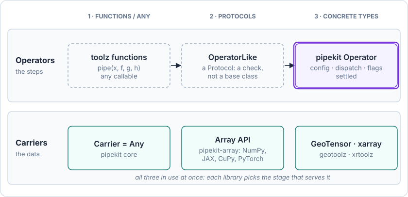

Background — from toolz to pipekit¶
Where pipekit comes from, and why its operators are classes.
pipekit is toolz with each function replaced by a typed class. This page
shows what that inheritance gives, the six things plain functions cannot
carry, and why operators settled on a concrete base class while the data
flowing through them did not. It is background: for what ships and when to
reach for it, read the tour of the core.
About this page
| Reading time | about 15 minutes |
| Audience | anyone who wants to know why pipekit is shaped the way it is |
| Companions | Tour of the core (what ships), Patterns (where it is used), Concepts (the mental model in ten minutes) |
| Checked against | toolz 1.1 and pipekit 0.0.2; every output below is from a real run |
| History | First written as Report 1 of the GeoStack design reports, which now point here |
Why this page exists¶
The pipekit design makes more sense once you have seen three things: what it
inherited from toolz, what that inheritance cannot do, and why moving from
"any function" to a typed operator class is the right call rather than
over-engineering. This is the motivation layer; the operators themselves are
in the tour of the core.
toolz as the ancestor¶
pytoolz/toolz is pipekit's explicit
intellectual ancestor. Looking at it directly is the fastest way to see which
idea pipekit carries forward and what it adds. Its functional core is a dozen
primitives.
The toolz.functoolz surface¶
The functoolz primitives pipekit inherits from.
toolz primitive |
What it does |
|---|---|
identity(x) |
pass the value through unchanged |
pipe(value, *funcs) |
apply functions left to right to a value |
compose(*funcs) |
right-to-left composition: f(g(h(x))) |
compose_left(*funcs) |
left-to-right composition |
juxt(*funcs) |
several outputs: juxt(f, g)(x) is (f(x), g(x)) |
do(f, x) |
run f(x) for its side effect and return x |
complement(pred) |
negate a predicate |
excepts(exceptions, func, handler) |
catch the listed exceptions while applying func |
memoize(func) |
cache results by input |
curry |
partial application, as a class wrapper |
thread_first, thread_last |
Clojure-style threading macros |
flip(f, a, b) |
call f(b, a) |
toolz also ships itertoolz (about 30 functions on iterables) and
dicttoolz (about 15 on dicts). pipekit only really inherits from
functoolz.
The mental model¶
toolz says a pipeline is a sequence of pure functions, composed with pipe
or compose. Each function is responsible for its transform and nothing
else; metadata, types and side effects are someone else's problem.
from toolz import pipe
from toolz.curried import do
pipe(
" HELLO ",
str.strip,
str.lower,
do(print), # side effect: prints "hello"
lambda s: s.split("l"),
)
# → ['he', '', 'o']
This is functional composition over plain Python. Functions are values,
composition is an operation, and side effects are explicit (do). It is
elegant and minimal, and it directly inspired pipekit's | syntax, the
Sequential shape, the Tap / Sink split, and the juxt / Fanout
pair.
One-to-one mappings to pipekit¶
Almost every pipekit primitive has a toolz ancestor. The mapping is tight
enough that the most accurate one-line description of pipekit is
toolz, with each function replaced by a typed class.
toolz primitives and their pipekit counterparts.
toolz |
pipekit | What pipekit's version adds |
|---|---|---|
pipe(value, *funcs) |
pipe(value, *operators), Sequential(operators)(value) |
operators carry config; a readable repr; reuse |
compose_left(*funcs) |
compose_left(...), op1 \| op2 \| op3 |
\| flattens into one Sequential; class-typed steps |
compose(*funcs) |
compose(...) |
the same, in mathematical order |
do(f, x) |
Tap(fn), Sink(write_fn) |
the closure is owned by an operator with a name; marked forbid_in_yaml |
juxt(f, g, h) |
juxt(...) (tuple) and Fanout({...}) (dict) |
both shapes; named outputs for downstream steps |
memoize |
Cache, with Memoize as an alias |
config-aware hashing |
excepts |
Try, Coalesce |
operator-shaped arms; an explicit exception list |
complement |
complement |
ships as a plain function |
identity |
Identity |
an operator, so it composes everywhere |
curry |
implicit in __init__ |
an operator's constructor is its partial application |
The same pipeline in both libraries shows the difference. Both outputs below are from real runs.
from toolz import compose_left
steps = compose_left(str.strip, str.lower, lambda s: s.split("l"))
print(steps)
# Compose(<function <lambda> at 0x7f…>, <method 'lower' of 'str' objects>,
# <method 'strip' of 'str' objects>)
from pipekit import Lambda, Tap
steps = (
Lambda(str.strip) | Lambda(str.lower) | Tap(print)
| Lambda(lambda s: s.split("l"))
)
print(steps)
# Sequential([Lambda(name='strip'), Lambda(name='lower'),
# Tap(name='print'), Lambda(name='<lambda>')])
steps[2] # → Tap(name='print')
steps(" HELLO ") # prints "hello"; → ['he', '', 'o']
toolz is the design template. pipekit is the typed, introspectable,
serialisable variant of the same idea.
Where toolz stops being enough¶
toolz handles the mechanics of function composition cleanly. Six things are
beyond it, and each is why the domain libraries needed more.
The six gaps, and where pipekit puts each one.
| Gap | What toolz gives |
Where it lives in pipekit | Status |
|---|---|---|---|
| Introspection | a repr of raw function objects | named operators, Sequential.__getitem__, summary() |
ships |
| Serialisation | nothing | get_config, dumps / loads, from_state |
flat operators only |
| Dual-mode dispatch | eager calls only | Operator.__call__ switches on Node inputs |
ships |
| Control flow | Python if / match outside the pipeline |
Branch, Switch, Try, Coalesce |
ships |
| Shape tracking | Any → Any |
Signature, Sequential.summary() |
ships; needs signatures |
| Closure discipline | any closure, silently | the forbid_in_yaml class flag |
ships |
Introspection¶
A toolz composition is not opaque: Compose prints its steps (the toolz
tab above). But it prints them as raw function objects, in reverse order,
with lambdas anonymous and no configuration or per-step state to inspect.
That is fine at an interactive prompt. For a 14-step preprocessing pipeline
that has to be audited, you want named steps, in order, that you can index
(steps[2]) and summarise.
Serialisation¶
toolz pipelines are tuples of function references and closures. They do
not round-trip to YAML, JSON or a Hydra config, and they cannot be shipped to
a worker process and rebuilt. Every deployment shape in the
patterns (an ETL job, a web service, a tile server, a
regulatory artifact, an orchestrator) needs serialisation in some form.
pipekit gives every operator a get_config(), and a pipeline's state is
its whole configuration: each nested operator as its own record, and for a
Graph every node and its wiring. That record round-trips through JSON, and
through _target_ YAML with pipekit-experiment's HydraConfigLoader:
import pipekit as pk
from pipekit import Cache, Const, Identity, Sequential
pipe = Cache(Sequential([Const(3), Identity()]))
back = pk.loads(pk.dumps(pipe))
back.state == pipe.state # → True
pk.pipeline_hash(back) == pk.pipeline_hash(pipe) # → True
Only operators that hold a closure (Lambda, Tap, a Branch predicate)
stay out: they are flagged forbid_in_yaml, and loads refuses them
wherever they sit in the tree.
Dual-mode dispatch¶
toolz functions only run eagerly. You cannot pass a symbolic placeholder
through them to build a graph that runs later. Graph building (the Input /
Node API) needs the same callable to behave differently depending on
whether its argument is data or a placeholder. In pipekit that switch lives
once, in Operator.__call__: any Node argument builds a graph node, and
anything else calls _apply.
Control flow¶
In a toolz-style pipeline, a conditional is a Python if or match
outside the pipeline, which splits the pipeline apart wherever one is needed.
pipekit makes conditionals first-class operators (Branch, Switch, Try,
Coalesce), composable inside a Sequential like any other step.
Shape tracking¶
Every toolz step is Any → Any. For scientific data that hides structure
worth surfacing: named dimensions, units, a coordinate system. pipekit's
Signature lets an operator declare what it accepts and returns, and
Sequential.summary() prints a Keras-style table that catches a shape
mismatch when the pipeline is built, not deep in a hot loop. Operators that
declare no signature show ? in that table, so the payoff grows as more
operators declare one.
Closure discipline¶
toolz accepts any closure. That is right for interactive work and wrong for
pipelines that must be audited: a closure cannot be inspected for what it
captures, serialised, or rebuilt on a worker. pipekit's answer is a class
flag. Operators whose constructor takes a closure declare
forbid_in_yaml = True (Tap, Lambda, Sink, Branch, Switch,
Coalesce, ShapeTrace, Quarantine, AssertCallable), and a loader can
refuse them. Operators that only nest other operators, such as Try,
Retry or Cache, are not flagged: a walker finds the flagged children
inside them.
The gaps in one line
pipekit is what toolz becomes when the pipeline is a first-class object:
printable, configurable, summarisable, dispatchable, and bound by rules
about what it may contain.
The trajectory: functions, Protocols, typed entities¶
The question is how pipekit moved from raw functions, through Protocols, to typed entities. The answer differs for the steps of a pipeline (operators) and for the data flowing through it (carriers), so the two are told separately.

Operators settled on a typed class; carriers use all three stages at once.
Operators¶
The toolz shape: an operator is a Python function. Maximum flexibility,
zero boilerplate.
Buys you: any existing function adapts trivially, with no subclassing
and no dependency beyond toolz.
Costs you: no config, no readable repr, no serialisation, no dispatch, no flags, no state, and no reuse beyond reusing the function.
The natural next thought is to write a Protocol for what an operator
looks like. Anything structurally compatible counts; nothing has to
inherit.
from typing import Protocol
class OperatorLike(Protocol):
def __call__(self, x): ...
def get_config(self) -> dict: ...
Buys you: structural typing. Tools can recognise operator-shaped objects without forcing inheritance, which suits third-party code that does not import your library.
Costs you: a Protocol is a check, not a base class.
- No default implementations. Every implementer rebuilds
get_config,__repr__and__or__; there is nosuper()to reuse. - No class-level flags.
forbid_in_yamland_terminaldescribe an operator's contract, not its instances, and a Protocol cannot carry them cleanly. - No shared mechanism. Dual-mode dispatch is infrastructure every operator needs; with a Protocol each one reimplements it.
- No class registry.
Operator.from_staterebuilds an operator by walkingcls.__subclasses__(); a Protocol has no subclasses to walk.
Verdict: a Protocol is the right tool to check that something is operator-shaped, and the wrong tool to be the operator base. (pipekit still uses Protocols where they fit: for the seams algorithm libraries plug into without importing it; see Protocols.)
Where pipekit landed. A simplified view of pipekit/_base/operator.py:
class Operator(ConfigMixin):
forbid_in_yaml: ClassVar[bool] = False # closure-holding operators set True
_terminal: ClassVar[bool] = False # may only end a Sequential
def __call__(self, *args, **kwargs): # dual-mode dispatch
if any(isinstance(a, Node) for a in args):
... # build a graph node
return self._apply(*args, **kwargs) # run eagerly
def _apply(self, *args, **kwargs): # the one method subclasses write
raise NotImplementedError
def __or__(self, other) -> Sequential: # pipe syntax, defined once
...
@classmethod
def from_state(cls, state) -> Operator: # walks cls.__subclasses__()
...
Buys you:
__init__carries config,get_config()(derived byConfigMixin) exposes it, andfrom_staterebuilds from it.__or__is defined once, so every subclass gets pipe syntax for free.- Dual-mode
__call__is defined once; subclasses only write_apply. - Class flags (
forbid_in_yaml,_terminal) are visible toSequential's validation and to any loader. - IDEs and type checkers see the whole surface.
Costs you:
- Subclassing is more ceremony than a function (
class NDVI(Operator)). - A third-party function does not adapt for free;
Lambdais the escape hatch, andConfigMixinkeeps the boilerplate small. - More framework code to maintain.
Verdict: the right design for operators. Every responsibility has a natural home, and the cost is a one-time decision to subclass. geotoolz and xrtoolz each arrived here independently before the base class moved into pipekit, which is the strongest sign it is right.
Carriers¶
The carrier trajectory is different, and not settled.
pipekit's core uses Carrier = Any. The framework does not care what
flows through; operators that need structure check it in their own
signatures.
Buys you: maximum flexibility. Composition works the same whether the
carrier is a NumPy array, an xr.DataArray, a DataFrame, an AnnData, a
scalar or a user type, and test pipelines can run on scalars.
Costs you: operators that do want structure (named axes, coordinate systems, units) duck-check it every time, and there is no shared metadata surface.
The ecosystem has converged on Protocol-shaped array descriptions through
the Array API standard:
numpy.ndarray, jax.Array, cupy.ndarray, torch.Tensor and
dask.array.Array all expose __array_namespace__. Operators written
against it declare the Protocol and work across backends; pipekit-array
is where they live.
Buys you: an operator written once runs on NumPy, JAX, CuPy and PyTorch arrays, which is real value for cross-framework pipelines.
Costs you: the Array API becomes a dependency; operators call the
namespace (xp.mean(x)) rather than NumPy (np.mean(x)); and some
operations do not generalise cleanly, NaN handling for one.
Domain libraries type their operators to a specific carrier. In the
GeoStack, geotoolz uses GeoTensor and xrtoolz uses xr.DataArray or
xr.Dataset.
Buys you: rich metadata used natively. geotoolz operators read
.crs and .transform without defensive checks; xrtoolz operators use
.dims and .coords directly.
Costs you: each library is locked to its carrier, so
Sequential([geotoolz_op, xrtoolz_op]) does not compose across them, and
a carrier-specific operator is written once per library.
Where pipekit lands¶
The two trajectories, resolved separately.
| Axis | Where it lands | Status |
|---|---|---|
| Operators | a typed concrete base class, pipekit.Operator |
settled |
| Carriers, pipekit core | Carrier = Any |
settled: the core stays carrier-agnostic |
| Carriers, multi-backend | Array API Protocols, in pipekit-array | in progress |
| Carriers, domain libraries | your own: GeoTensor in geotoolz, xr.DataArray / xr.Dataset in xrtoolz, … |
in use |
It was never one arc from functions to Protocols to typed entities. It was
two trajectories that shared vocabulary. Operators started at toolz
functions, considered Protocols, and landed on a typed base class. Carriers
are still at all three stages at once, by design: each library uses the
stage that serves it. Telling them as one story blurs the picture.
Why typed operators are not over-engineering¶
"Just use functions" is tempting: less code, faster to write, familiar to
anyone who has used toolz, no subclassing.
The case for typed operators is that the six gaps above have no
function-shaped solutions. Each needs somewhere to live: get_config on the
operator, forbid_in_yaml on the class, dispatch in __call__, subclass
walking in from_state. A function is the wrong host for all of them.
So the argument is not that classes beat functions. It is that the
responsibilities pipekit takes on are class-shaped. Remove them (no
introspection, no serialisation, no dispatch, no flags) and you are left with
toolz, which is a perfectly good answer for problems that fit it.
pipekit's problems do not.
Where next¶
- The tour of the core turns this background into what
ships: the
toolz-style functions, theOperatorbase with the machinery for the six gaps, composition, control flow, observers, caching, QC, shape inference, parallelism, serialisation and state. - Patterns maps it onto the shapes real deployments take, each linked to a worked tutorial.
- The sister libraries that narrow the carrier (pipekit-array, geotoolz, xrtoolz) and the wider stack are in the GeoStack design reports.
References¶
- toolz and its documentation.
- The Python Array API standard.